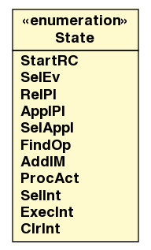

jason.asSemantics
Enum TransitionSystem.State

java.lang.Object
 java.lang.Enum<TransitionSystem.State>
jason.asSemantics.TransitionSystem.State
java.lang.Enum<TransitionSystem.State>
jason.asSemantics.TransitionSystem.State
- All Implemented Interfaces:
- java.io.Serializable, java.lang.Comparable<TransitionSystem.State>
- Enclosing class:
- TransitionSystem
public static enum TransitionSystem.State
- extends java.lang.Enum<TransitionSystem.State>
| Methods inherited from class java.lang.Enum |
clone, compareTo, equals, finalize, getDeclaringClass, hashCode, name, ordinal, toString, valueOf |
| Methods inherited from class java.lang.Object |
getClass, notify, notifyAll, wait, wait, wait |
StartRC
public static final TransitionSystem.State StartRC
SelEv
public static final TransitionSystem.State SelEv
RelPl
public static final TransitionSystem.State RelPl
ApplPl
public static final TransitionSystem.State ApplPl
SelAppl
public static final TransitionSystem.State SelAppl
FindOp
public static final TransitionSystem.State FindOp
AddIM
public static final TransitionSystem.State AddIM
ProcAct
public static final TransitionSystem.State ProcAct
SelInt
public static final TransitionSystem.State SelInt
ExecInt
public static final TransitionSystem.State ExecInt
ClrInt
public static final TransitionSystem.State ClrInt
values
public static TransitionSystem.State[] values()
- Returns an array containing the constants of this enum type, in
the order they are declared. This method may be used to iterate
over the constants as follows:
for (TransitionSystem.State c : TransitionSystem.State.values())
System.out.println(c);
- Returns:
- an array containing the constants of this enum type, in
the order they are declared
valueOf
public static TransitionSystem.State valueOf(java.lang.String name)
- Returns the enum constant of this type with the specified name.
The string must match exactly an identifier used to declare an
enum constant in this type. (Extraneous whitespace characters are
not permitted.)
- Parameters:
name - the name of the enum constant to be returned.
- Returns:
- the enum constant with the specified name
- Throws:
java.lang.IllegalArgumentException - if this enum type has no constant
with the specified name
java.lang.NullPointerException - if the argument is null